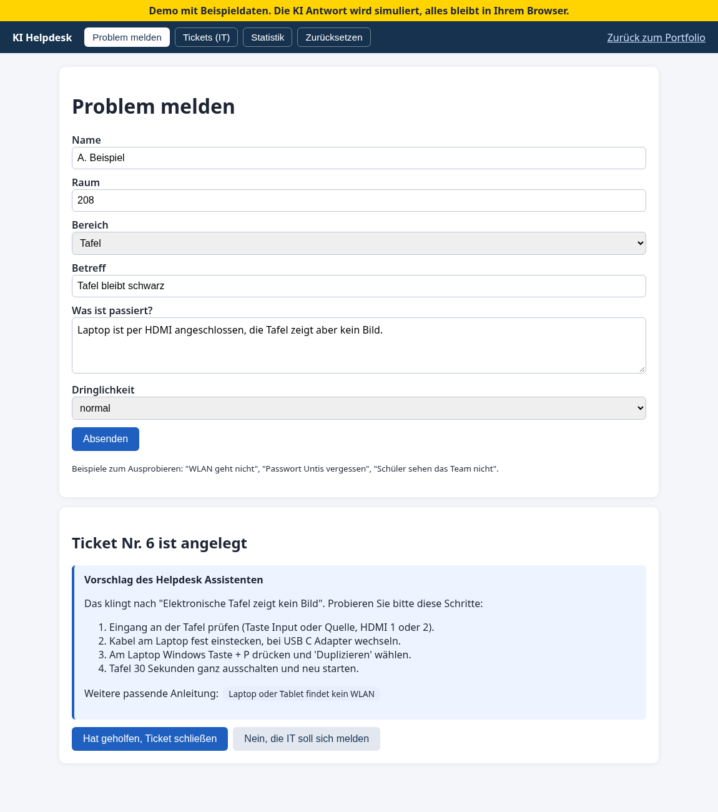
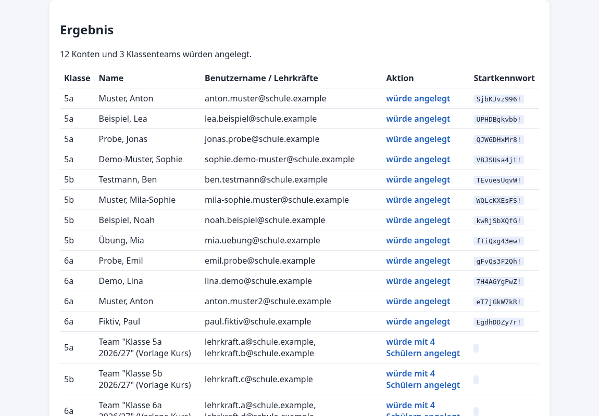

IT Support, Microsoft 365 Administration und Digitalisierung. Seit 2020 sorge ich an einer privaten Realschule in München dafür, dass Technik, Konten und Abläufe für Kollegium, Eltern und Schüler zuverlässig funktionieren.
Projekte ansehenKontaktAls Verantwortlicher für Stunden und Vertretungsplanung & Digitalisierung an einer privaten Realschule in München betreue ich den 1st und 2nd Level Support vor Ort und per Fernwartung, verwalte die Microsoft Konten von rund 500 Schülern in Entra ID und administriere Teams und Microsoft 365.
Ich löse Probleme so, dass sie nicht wiederkommen: mit klaren Anleitungen, Erklärvideos und Workshops. Wiederkehrende Aufgaben automatisiere ich mit eigenen Tools, die ich mit Unterstützung von KI entwickle.
Eigenverantwortliche Einführung von Microsoft Teams für den gesamten Schulbetrieb während der Corona Pandemie. Einrichtung und Bereitstellung von Endgeräten, Schulungen für Kollegium und Eltern.
Web App, die das Papierformular für Freistellung oder Beurlaubung ersetzt. Mitarbeitende stellen den Antrag online, Vorgesetzte und Geschäftsführung geben in zwei Stufen frei, stellen Rückfragen oder lehnen ab. Jede Station verschickt automatisch eine Benachrichtigung, ein Fortschrittsbalken zeigt den Stand. Anmeldung im Echtbetrieb über Microsoft Entra ID, Rollen und Schulzuordnung pflegt die Verwaltung.
Demo ausprobieren Demo mit Beispieldaten, läuft komplett im Browser.

Das Kollegium meldet Probleme mit Untis, Schulportal, Teams oder den Tafeln über ein Formular. Sofort erscheinen passende Lösungsschritte aus der Wissensdatenbank, auf Wunsch von einer KI formuliert. Hilft das, schließt der Melder das Ticket selbst. Sonst landet es mit Status, Priorität und Bearbeiter in der Ticketliste der IT, eine Statistik zeigt Lösungsquote und Schwerpunkte.

PowerShell Skript mit Microsoft Graph: Aus dem Export der Schülerliste entstehen Konten in Entra ID nach festem Namensschema, Lizenzen und Gruppen werden zugewiesen und je Klasse ein Team mit der Vorlage Kurs angelegt. Testlauf mit WhatIf, Fortschritt in Prozent, Protokoll und CSV Bericht mit Startkennwörtern.